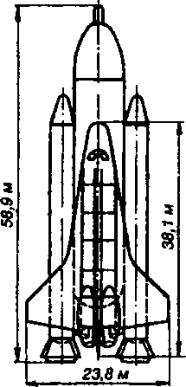
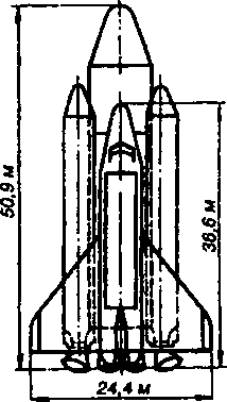
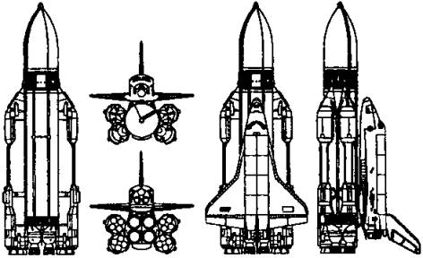
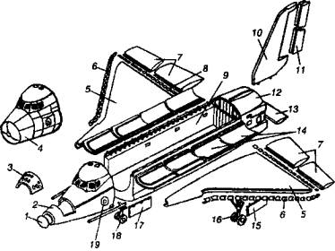
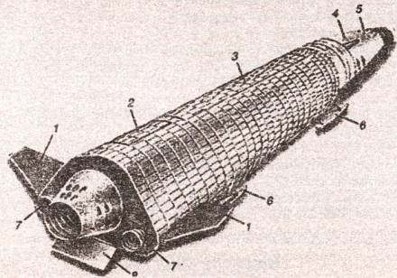

Наследники «Бурана»
Правда, в то время и позднее в правительство поступало немало предложений о создании более простых и дешевых авиационно-космических систем. Вспомним хотя бы о некоторых.
ПРОЕКТ НПО «ЭНЕРГИЯ». Так, на основе опыта по созданию орбитального корабля «Буран» в НПО «Энергия» по указанию главного конструктора Юрия Семенова и под руководством Павла Цыбина с 1984-го по 1993 год был разработан ряд проектов многоразовых кораблей малой величины, с массами от 15 до 32 т.

Американский «Шаттл» в исходном варианте.
Например, аэродинамическая схема пилотируемого многоразового корабля ОК-М была аналогична аэродинамической схеме корабля «Буран». Но поскольку его габариты (длина — 15 м, высота — 5,6 м, размах крыла — 10 м, масса полезного груза — до 3,5 т, состав экипажа — 2 пилота, 4 космонавта-исследователя) были существенно меньше, то в качестве носителя вполне могла бы использоваться двухступенчатая ракета «Зенит» конструкции НПО «Энергия».

Американский «Шаттл» в облегченном варианте.
МАКС ВЕРХОМ НА «МРИИ». Еще один проект предложил в 1982 году генеральный конструктор НПО «Молния» Г. Е, Лозино-Лозинский. Он получил название МАКС, то есть «Многоразовая авиационно-космическая система». В 1988 году был разработан проект системы (220 томов) и создано несколько ее моделей.
Система МАКС состоит из дозвукового самолета-носителя и установленной на нем орбитальной ступени с внешним топливным баком. В качестве первой ступени МАКСа планировалось использовать тяжелый самолет Ан-225 («Мрия») или сверхмощный двухфюзеляжный самолет «Геракл», который еще предстояло построить.
По вариантам второй ступени система МАКС имеет три модификации: МАКС-ОС, МАКС-Т и МАКС-М. В первом случае используются орбитальный многоразовый самолет и одноразовый топливный бак. Для выведения на орбиту тяжелых (до 18 тонн) полезных нагрузок предназначена модификация МАКС-Т, имеющая вторую беспилотную ступень одноразового применения. Наконец, МАКС-М — многоразовый беспилотный орбитальный самолет, топливные баки которого включены в конструкцию самого планера.
Система МАКС, по расчетам, мота снизить стоимость выводимых в космос грузов до 1000 долларов за килограмм (против 11 000-25 000 долларов за килограмм по нынешним ценам). Причем базировать МАКС собирались на аэродромах 1-го класса, дооборудованных средствами заправки компонентами топлива, наземного технического и посадочного комплексов.
На состоявшемся в ноябре 1994 года в Брюсселе Всемирном салоне изобретений, научных исследований и промышленных инноваций «Брюссель-Эврика-94» программа МАКС получила золотую медаль и специальный приз премьер-министра Бельгии.
Однако после смерти Главного конструктора системы интенсивность проталкивания проекта резко снизилась. И МАКС скорее всего, так и останется в истории лишь в виде макетов да чертежей.
КОСМИЧЕСКИЕ «МИГИ». Среди относительно недавно выдвинутых проектов воздушно-космических самолетов в особую группу можно выделить аппараты, разрабатываемые в авиационном конструкторском бюро имени Микояна: МиГ-2000 и МиГ-АКС.
Первый представляет собой одноступенчатый воздушно-космический самолет со взлетным весом 300 т, способный выводить полезную нагрузку до 9 т на орбиту высотой 200 километров с наклонением 51°. Второй вариант — это двухступенчатый воздушно-космический самолет, создаваемый на основе оригинальной идеи электромагнитной левитации, «ЭТОЛ».
Эта концепция была впервые продемонстрирована специалистами КБ имени Микояна и ЦАГИ на Международном авиакосмическом салоне в Жуковском летом 1999 года. Согласно ей, летательные аппараты должны садиться и взлетать с электромагнитной взлетно-посадочной полосы (ВПП), позволяющей ускорить разгон при взлете и обеспечить торможение при посадке с помощью известного принципа взаимодействия движущегося тела с магнитным полем. Идея была уже испытана в лаборатории на алюминиевых макетах «электромагнитного беспилотного моноплана» массой до 10 кг, который разгоняли и тормозили на полосе длиной 5 м.
Реальная же разгонная ВПП должна быть длиной 4 км. Найдутся ли на нее деньги, а главное, сможет ли наша промышленность создать мощные магниты, которые позволят за 10–15 секунд осуществить взлет самолета массой до 700 т, пока еще большой вопрос.
Пока специалисты пытаются проверить на практике методику электромагнитных запусков на сравнительно небольшом многоцелевом беспилотном самолете, который можно использовать для военной и геологической разведок и т. д.
Однако и эта разработка продвигается с трудом из-за отсутствия должного финансирования.
«ЗАРЯ» НА ГОРИЗОНТЕ. Кроме самолетных схем, конструкторы давно уже хотели поменять нынешний «Союз» на что-либо более комфортабельное. Одним из вариантов был проект многоразового транспортного корабля «Заря», запускаемого на орбиту с помощью ракеты «Зенит».
Его предполагалось создавать в два этапа: сначала — базовый многоразовый пилотируемый транспортный корабль, затем его модификации для решения специальных задач.
Работы над ним начались в 1987 году, еще под личным контролем Генерального конструктора В. М. Глушко. Считалось, что он вполне может быть использован для доставки на орбиту экипажей численностью до 8 человек.
Однако в январе 1989 года тема была закрыта. Официальная причина — опять-таки отсутствие денег на проект.
ДВУХМОДУЛЬНЫЙ ВКК. Впрочем, опыт, накопленный в ходе работ по орбитальным кораблям типа ОК-М и «Заря», позволил выдвинуть новый перспективный проект корабля многоразового использования. Он обсуждался в НПО «Энергия» в 1991 году, но, к сожалению, не получил поддержки ведущих конструкторов.
Тем не менее концепция ВКК («Воздушно-космический корабль») заслуживает внимания, поскольку может оказаться весьма перспективной в будущем.
По идее, такой корабль должен состоять из двух аппаратов-модулей; один — крылатый, другой выполнен по схеме несущего корпуса. При этом модули соединены не последовательно, а параллельно — один над другим. Снизу — несущий корпус служебного модуля, «верхом» на нем — пилотируемый. Соединение осуществляется на пироболтах и может быть устранено одним нажатием кнопки.
Пилотируемый модуль используется многократно, служебный — один раз, причем его можно модифицировать под конкретно выполняемую задачу.
Вся эта система стартует с помощью ракеты-носителя типа «Зенит» или даже на самолете. Как показывают расчеты, функционирование подобной комбинированной системы может обойтись дешевле, чем нынешние одноразовые запуски.
Новый виток интереса к подобной системе возможен в свете начавшихся испытаний системы «Байкал-Ангара», где в роли второй ступени выступает крылатая ракета, способная, по идее, возвращаться на аэродром. А если добавить к системе еще и небольшой многоразовый челнок, может получиться вполне практичный комплекс для доставки людей на орбиту.
«КЛИПЕР» УЖЕ НА СТАПЕЛЕ. Еще одна новинка наших дней — многоразовый корабль «Клипер», который будет действовать в составе новой системы доставки грузов на орбиту «Паром». Новый космический корабль уже обретает реальные очертания в просторном цехе ракетно-космической корпорации «Энергия».
«Уже наглядно видно, что представляет собой этот корабль, — сообщил журналистам заместитель Генерального конструктора РКК „Энергия“, летчик-космонавт и дважды Герой Советского Союза Валерий Рюмин. — Он будет существенно отличаться и от российских „Союзов“, и от американских „шаттлов“. Коллектив разработчиков под руководством заместителя генерального конструктора Николая Брюханова, использовав опыт по созданию „Союзов“ и „Бурана“, собственные оригинальные решения, добился весьма неплохих результатов».
Основные характеристики российского многоразового корабля «Клипер» таковы: длина — 7 м, масса — 14 т, экипаж — 6 человек, объем кабины — 20 куб. м. С орбиты можно возвращать 500 кг полезного груза. В космос корабль будет выводиться или новой ракетой «Онега», или (если ее не успеют довести) «Зенитом».
«Клипер» будет иметь возможность совершать при спуске маневр и приземляться на парашютах в России (а не в Казахстане, как нынешние «Союзы»). Уникальную кабину планируется отправлять в космос много раз. При соответствующем финансировании первый испытательный полет может произойти уже через пять лет…

Компоновка комплекса «Энергия-Буран».
Валерий Рюмин особо отметил, что в передней носовой части «Клипера» установят (как и на «Союзе») двигатели системы аварийного спасения (САС). Таким образом, обеспечивается безопасность экипажа в случае возникновения любых ЧП и на старте, и на всех участках выведения корабля в космос. «Шаттлы», к слову, не имеют такой системы, и из-за ее отсутствия не удалось спастись семерым астронавтам при взрыве во время взлета многоразового «челнока» «Челленджер».
«Клипер», который полетит не ранее 2008–2010 года, ведет свою родословную от первых маневрирующих возвращаемых аппаратов, приводнявшихся в начале 60-х годов XX века. Сперва он выглядел как цилиндр с носовым конусом и стабилизирующей конической «юбкой» на корме — эдакий «гвоздь». Потом аэродинамики подсказали лучший вариант: конус с наплывами, которые делали нижнюю часть плоской, повышая аэродинамическое качество и перераспределяя нагрев при входе в атмосферу.
В одном из вариантов, опубликованном в 1993 году, 3,5-тонный корабль должен был запускаться «Циклоном» или проектировавшимся тогда же в «Энергии» легким носителем «Квант». Обводами он уже почти полностью предвосхищал возвращаемый аппарат «Клипера», только размерами поменьше (длина — 2,9 м, диаметр — 1,3 м). Однако до его строительства дело так и не дошло — обошлись более дешевыми «Фотонами».
Нынешний «Клипер» состоит из двух отсеков — возвращаемого или спускаемого аппарата и агрегатного или орбитального отсека.
Возвращаемый аппарат массой 9,8 т представляет собою конус, составленный из трех частей. Причем одна из боковых сторон (нижняя при посадке) наплывами выровнена под этакую «лыжу». Самый нос затуплен для лучшего гашения кинетической энергии торможения в атмосфере. Вокруг носа видны узлы крепления двигателей системы аварийного спасения, срывающих корабль с ракеты в случае аварии.

Компоновка орбитального корабля «Буран»: 1 — носовой кок; 2 — носовая часть фюзеляжа (агрегат Ф-1); 3 — носовой блок двигателей управления; 4 — герметичный модуль кабины; 5 — крыло с наплывом; 6 — носовые секции крыла; 7 — элероны; 8 — элеронные щитки; 9 — средняя часть фюзеляжа (агрегат Ф-2); 10 — киль; 11 — руль направления-воздушный тормоз; 12 — хвостовая часть фюзеляжа (агрегат Ф-3); 13 — балансировочный щиток; 14 — створки отсека полезного груза с панелями радиационного теплообменника; 15 — створка ниши основной опоры шасси: 16 — основная опора шасси: 17 — створка ниши передней опоры шасси; 18 — передняя опора шасси; 19 — входной люк.
В самом аппарате два отсека. Впереди — двигательный, в котором установлены ракетные двигатели системы ориентации и управления спуском и баки с топливом для них, за ним — отсек экипажа, рассчитанного на шесть космонавтов. Причем только двое из них будут непосредственно заняты управлением «Клипером», так что остальные четверо могут быть научными работниками или даже просто космическими туристами.
Люк в задней стенке возвращаемого аппарата связывает его с агрегатным отсеком массой около 4,5 т. В нем расположены двигатели орбитального маневрирования, топливо для них, система электропитания, а также оборудование, необходимое для работы на орбите, припасы и т. д.
В случае необходимости обитаемая часть агрегатного отсека будет использоваться и как шлюзовая камера для выхода в открытый космос. Таким образом, помимо транспортных рейсов к орбитальной станции, «Клипер» сможет выполнять и самостоятельные полеты продолжительностью до 10 суток.
ГИПЕРЗВУКОВОЙ «АЯКС». Еще об одном прорывном проекте российских ученых мир узнал в 1991 году. Используя перспективные военные технологии, руководитель СКВ «Нева» (ныне — Санкт-Петербургское научно-исследовательское предприятие гиперзвуковых систем) Владимир Фрайштадт предложил оригинальную конструкцию одноступенчатого аэрокосмического самолета, получившую название «Аякс».
Летательный аппарат должен состоять как бы из двух вложенных один в другой корпусов. Между ними — специальный катализатор, куда поступает поток традиционного керосина или более перспективного топлива — сжиженного метана. Когда аппарат совершает гиперзвуковой полет в атмосфере, то внешний корпус сильно нагревается из-за трения об атмосферу и под влиянием высоких температур происходит термохимическое разложение углеводородного топлива. Процесс забирает большое количество энергии и охлаждает реактор. В результате термохимического разложения топлива выделяется свободный водород. В смеси с тем же топливом он образует очень эффективное горючее для самолета.
Кроме того, часть обтекающего аппарат воздуха поступает в магнитоплазмохимический прямоточный воздушно-реактивный двигатель. В этом двигателе находятся магнитогазодинамический (МГД) генератор и ускоритель. Генератор создает мощное магнитное поле, в котором тормозится набегающий поток. Затем заторможенный и предварительно ионизированный поток воздуха поступает в камеру сгорания, куда подается обогащенное водородом топливо (керосин или метан). Истекающие продукты сгорания попадают в сопло, дополнительно разгоняются МГД-ускорителем и, расширяясь, выбрасываются наружу.
На базе этой концепции сотрудниками Научно-исследовательского предприятия гиперзвуковых систем разработано целое семейство гиперзвуковых летательных аппаратов «Нева», предназначенных для транспортировки полезных грузов на дальние расстояния или на орбиту.
Среди них — многоцелевой гиперзвуковой самолет «Нева» для метеорологических и астрофизических исследований, геологической разведки и экологического контроля; гиперзвуковые самолеты для перевозки грузов и пассажиров со скоростью 15 000 / .
Особый интерес для нас представляет воздушно-космический самолет «Нева». Его характеристики таковы: взлетная масса — 364 т, масса полезной нагрузки, выводимой на орбиту, — 3 т, максимальная скорость полета на высоте 100 километров — 7500 / .
В настоящее время командой Владимира Фрайштадта проведены все возможные исследования, однако до постройки экспериментальных прототипов дело никак не дойдет. Причина стандартна: у нашего государства нет денег на осуществление высокотехнологических проектов. А частный капитал, имея перед собой наглядный пример «ЮКОСа», вовсе не стремится выводить свои капиталы из тени и вкладывать их в перспективные разработки.
«АЭРОКОСМИЧЕСКОЕ РАЛЛИ». Тем временем в 1996 году американский фонд «Икс-прайс» («Х-Prize») учредил приз в 10 млн. долларов за создание тренировочного и туристического ракетоплана, который мог бы доставить на высоту более 100 км трех астронавтов.
Предварительные разработки представили до четырех десятков частных фирм, научных организаций и университетов. Включилась в конкурс и Центральная научно-исследовательская лаборатория «Астра» Московского авиационного института. В этой лаборатории занимаются разработкой вопросов выведения в околоземное пространство малых спутников (до 100–200 кг) посредством систем «воздушного старта». Сотрудники лаборатории сочли, что «воздушный старт» будет наиболее оптимальным способом для выведения туристского ракетоплана на орбитальную высоту.
В разработке проекта приняли участие также специалисты Экспериментального машиностроительного завода имени Мясищева, ОКБ имени Микояна, ЦАГИ имени Жуковского, Института авиационной медицины и НИИ парашютостроения.
В качестве носителя выбрали истребитель МиГ-31, который создавался для борьбы с крылатыми ракетами и сверхзвуковыми бомбардировщиками типа «Валькирия». Выводимый на орбиту объект размещается под фюзеляжем на подвеске. Выйдя в зону пуска, МиГ-31 набирает скорость около 2500 / , поднимается на высоту 20 км и сбрасывает ракетоплан или ракету-носитель, у которых через 6 секунд включается бортовой двигатель.
В конструкции самого многоцелевого суборбитального ракетоплана АРС (сокращение от «Аэрокосмическое ралли») использован опыт создания предшественников нашего «Бурана» — беспилотных орбитальных прототипов системы «Бор».
Габариты АРС: длина — 5,8 м, ширина — 3,7 м, высота — 1,5 м, взлетная масса — 1700 кг, из них 350 кг приходится на полезную нагрузку.
В передней части герметичной кабины АРС находится место пилота-космонавта, за ним располагаются штурман и бортинженер либо туристы. В течение трехминутного полета экипаж АРС проходит все стадии космического путешествия.
Предполагается, что после отделения от МиГ-31 ракетоплан включит собственный двигатель и разовьет скорость до 1300 м/с. При этом он поднимется на высоту 120–130 км, а затем перейдет в режим планирующего спуска. Наконец, он совершит посадку на аэродром по-самолетному или приземлится с помощью крыла-парашюта.
«КОСМИЧЕСКОЕ ТАКСИ». Еще один проект в рамках конкурса «Икс-Прайс» разрабатывается в Акционерном обществе «Суборбитальная корпорация» при участии Экспериментального машиностроительного завода имени Мясищева.
По идее, запуск ракетного модуля «Космополис-???» с пассажирской капсулой осуществляется с самолета-носителя на высотах порядка 20 км. В качестве самолета-носителя выбран высотный самолет М-55 («Геофизика») разработки завода имени В. М. Мясищева. Его летные характеристики таковы: максимальная скорость — 2650 / , практический потолок — 22 км, максимальная дальность — до 4000 км.
Ракетный модуль «Космополис-???» состоит из трехместной пассажирской капсулы, двигательного блока, отсека оборудования с системами управления, жизнеобеспечения и спасения. Он устанавливается на «спину» самолету-носителю и держится на специальных узлах крепления, снабженных управляемыми механическими замками.

Многоразовый транспортный корабль НПО «Энергия»: 1 — стабилизаторы; 2 — парашютный отсек; 3 — отсек полезного груза; 4 — кабина экипажа; 5 — двигатели системы ориентации; 6 — выдвижные посадочные опоры; 7 — двигатели довыведения и орбитального маневрирования; 8 — балансировочный щиток.
Внутри капсулы размещается три пассажирских кресла, которые для снижения посадочных перегрузок снабжены системой демпфирования. Система жизнеобеспечения позволяет поддерживать внутри пассажирской капсулы нормальные условия для жизнедеятельности космических пассажиров без применения индивидуальных дыхательных приборов.
После сброса с самолета-носителя ракетный модуль должен набирать высоту по параболе, в верхней точке которой происходит расстыковка пассажирской капсулы и двигательного отсека. При снижении пассажирская капсула опирается на выдвижные аэродинамические плоскости, которые и обеспечивают управляемый спуск. Посадка выполняется по-самолетному, на взлетно-посадочную полосу обычного аэродрома. В качестве альтернативного варианта возможна посадка пассажирской капсулы на парашюте.
По словам Главного конструктора проекта Валерия Новикова, такая схема позволит совершить своего рода революцию в астронавтике, поскольку приведет к появлению нового поколения космических носителей многоразового использования, куда более дешевых и надежных, чем нынешние.
Однако пока наши конструкторы, продемонстрировав модели своих конструкций, искали субсидии на их строительство, приз забрал известный американский авиаконструктор Барт Рутан, создавший на деньги частного капитала аэрокосмическую систему «Белый рыцарь», которая и смогла совершить осенью 2004 года взлет на высоту более 100 км.
Правда, создание самой системы обошлось более чем в 25 млн. долларов. Однако инвесторы вовсе не считают свои деньги выброшенными на ветер. Ведь ныне, как известно, один только билет на орбиту для космического туриста стоит таких денег. Создатели «Белого рыцаря» обещают брать дешевле и тем не менее намерены получать ежегодно прибыль не менее 100 млн долларов.